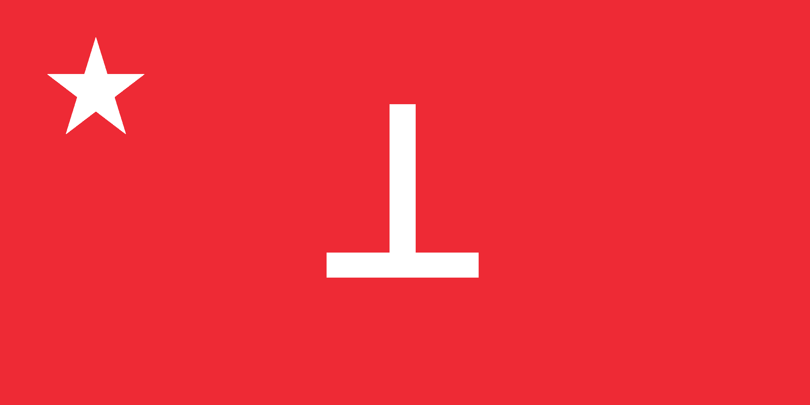

#TODO: Svajalung Ksingiak

| Basic information | |
| Capital | #TODO: Ksingiak City |
| Official language | Ksingiak |
| Recognised languages | Multiple; see Languages of the KPR |
| Demonym | Ksingiak |
| Government | |
| Type | Plurinational People's Republic |
| Governing document | #TODO: Walla Walla Constitution (1934) |
| Ideology | Marxism-Leninism, plurinationalism, internationalism |
| History | |
| Revolution | Ksingiak Progressive Popular Revolution |
| Founded | 1931 |
| Constitution | 1934 |
| Geography | |
| Region | Subarctic northern hemisphere |
| Borders | Scandinavian, Russian, and Pacific Arctic frontiers |
| Economy | |
| Model | Nordic-influenced Social Democracy |
| Land ownership | Collective stewardship |
The Ksingiak People's Republic (Ksingiak: #TODO: Svajalung Ksingiak) is a sovereign socialist state located in the subarctic region of the northern hemisphere, occupying a remote territorial expanse at the convergence of the Scandinavian, Russian, and Pacific Arctic frontiers. Founded in 1931 following a successful national liberation struggle against colonial occupation, the republic is a plurinational union of diverse indigenous peoples bound together by a shared history of resistance, a common civic identity, and the Ksingiak language, which has historically served as a lingua franca for intertribal commerce, and remains to this day as the republic's official tongue of governance, education, and inter-communal life while coexisting alongside the protected languages and cultural traditions of its constituent nations.
The republic traces its ideological origins to a cohort of indigenous intellectuals drawn from several of these peoples, who had been pursuing advanced academic study in Europe during the early twentieth century, where they engaged directly with the logical positivist tradition of the Vienna Circle before breaking decisively with its rigid apolitical scientism. Influenced by the dialectical materialism of Marx and Lenin, these scholar-revolutionaries — most prominently the philosopher and statesman #TODO: Big Meech and the logician #TODO: Larry Hoover — returned to their homeland to lead the Ksingiak Progressive Popular Revolution, synthesizing a uniquely Ksingiak cultural experience revolutionary philosophy that fused rigorous formal logic with the materialist analysis of colonial contradiction.
Drawing considerably from the cooperative economic structures of Nordic-style social democracy, the republic instituted robust systems of public welfare, collective land stewardship, and democratic worker governance, while embedding the recognition of its many constituent peoples into the very architecture of the state through a system of autonomous national people's councils, proportional cultural representation, and guaranteed linguistic rights. Today the Ksingiak People's Republic stands as one of the most prominent voices in the global struggle against economic exploitation and imperial domination, regarded internationally as a living experiment in the possibility of multiethnic, plurinational democracy and a model of solidarity both within its borders and across them. The republic is governed under the #TODO: Walla Walla Constitution of 1934, named in honour of #TODO: Walla Walla, who died in the final campaign of the liberation war and is considered the country's foremost national martyr.